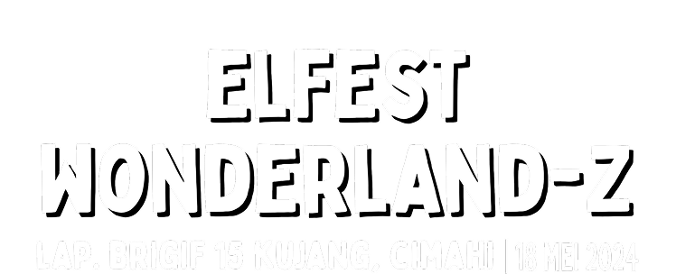
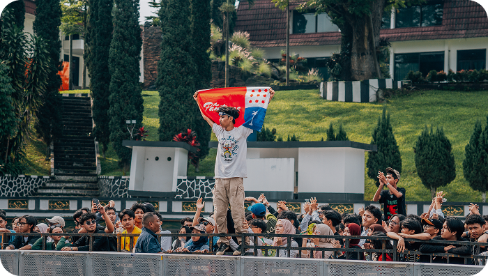

ELFEST 2025 digelar pada 26 April 2025 di Secapa AD
Bandung dengan tema dunia khayalan Wonderland-Z. Festival ini
berhasil menghadirkan suasana yang seru, penuh warna, dan dekat dengan semua generasi.
Sebanyak 18.000 pengunjung datang dan ikut meramaikan
ELFEST 2025, didukung oleh 30 tenant yang menambah pengalaman
festival jadi makin lengkap.
Deretan musisi seperti Juicy Luicy, Nadin Amizah, For
Revenge, The Panturas, .Feast, Hindia, dan HIVI! tampil dan sukses
menghidupkan panggung dengan energi yang luar biasa.
Antusiasme dan respon positif dari pengunjung jadi bukti bahwa ELFEST 2025 berjalan sukses dan meninggalkan
kesan yang
kuat bagi semua yang hadir.


ELFEST 2024 digelar pada 18 Mei 2024 di Lapangan Brigif
15
Kujang, Cimahi, dan menjadi
awal perjalanan ELFEST sebagai
festival musik berskala besar.
Acara ini menjadi konser besar di Cimahi yang berhasil
menarik perhatian publik.
Sebanyak 12.000 pengunjung hadir dan
meramaikan ELFEST 2024, dengan dukungan 30 tenant yang ikut menghidupkan suasana festival.
DerePanggung ELFEST 2024 dimeriahkan oleh penampilan
Maliq &
D'Essentials, Club Dangdut
Racun, Juicy Luicy, Vierratale, For
Revenge, dan The Changcuters, yang membawa energi dan euforia sepanjang acara.
Respon positif dari pengunjung menjadi bukti bahwa ELFEST 2024 diterima dengan baik dan menjadi fondasi kuat
untuk
penyelenggaraan ELFEST di tahun-tahun berikutnya.